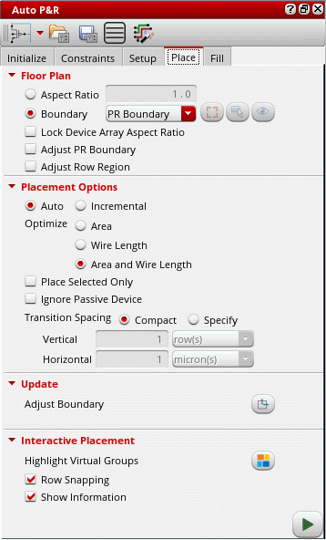

Placing Devices Automatically in the Automated Device Placement and Routing Flow
The Virtuoso device-level automatic placer analyzes the constraints from various sources, such as Modgens, Constraint Manager, figGroups, and circuit finder, and runs the global placer to achieve the required placement results without any design rule violations. The placer reshapes Modgens, unless they are locked, following the specified transition spacing.
To run the Virtuoso device-level automatic placer:
-
Open the Place tab of the Auto P&R assistant.
 - Select the placement region in the Floor Plan section by either specifying an Aspect Ratio or by selecting PR Boundary or Custom Area in Boundary mode.
- If Custom Area is selected, click the Draw icon and draw the required area boundary in the layout canvas. When you draw a new custom area, the previous one is automatically deleted.
- Select Lock Device Array Aspect Ratio to lock the aspect ratio of all Modgens when running the placer.
-
Select Adjust PR Boundary to run the placer unconstrained by the current PR boundary.
Devices are placed so as to achieve better QoR and wire length. After placement, the PR boundary is adjusted accordingly. -
Set the placement mode to Auto to run the placer on the entire design.
To incrementally place non-optimally placed devices, select Incremental. -
Select one of the following settings in the Optimize section:
- Area: Place devices to optimize compactness.
- Wire Length (Auto mode): Minimizes the wire length for better routability.
- Area and Wire Length achieves a balance between compact placement and reduced wire length.
In Incremental mode, the following options are available: - Select Place Selected Only to run the placer only on those the objects that are selected in the layout canvas. These objects are placed inside the selected placement Boundary.
- Select Ignore Passive Device to ignore passive components while running the placer.
- If your process node supports it, use the Insert Trim to Fix Shorts option to add trims during the placement run in order to avoid shorts.
- Set Transition Spacing to either Compact or Specify. Use the fillRegionHonorTransitionSpacingenvironment variable to control the direction in which the transition spacing is to be applied when inserting device fill.
- When set to Specify, add absolute vertical and horizontal spacing values. Also set the unit for vertical spacing to microns or rows when row regions are created and microns if diffusion grids are created.
- Click the Adjust Boundary icon in the Update section to resize the PR boundary such that it covers any devices that were earlier placed outside the PR boundary.
-
You can perform the following additional tasks in certain advanced node flows:
- Select Swap Colors of Flipped Rows to automatically update the color swap parameters in the active cells such that the same-masked colors of the lowest metal layer do not face each other.
- Select Enable Hierarchical Trims to enable trim insertion in hierarchical designs.
- Select Minimize M0 on Nets to minimize the capacitance on M0 nets in addition to the regular trim insertion. The length of the M0 wires is trimmed using multiple trims to minimize the capacitance.
- In Insert Trims to Fix Shorts, you can add trims to devices in the current cellview or PR boundary, validate trims, and delete trims
-
Click the
 icon to run the placer.
icon to run the placer.
A progress bar that indicates the placement status is displayed at the bottom-right corner of the design canvas. The run placer button changes to the stop placer button, which lets you stop the placer and revert the design placement to its initial state.
After running the placer, the devices are placed as per your specifications and a placement report is displayed in the CIW.
The following image depicts the automatic row-based, constraint-compliant placement of devices and groups achieved after running the Virtuoso device-level automatic placer.
The placer cannot run on a design with base layer fill. If base layer fill is detected, a message that provides the option to delete the fill is displayed. Select one of the following options:
- Yes: Deletes top-level fill and runs the placer.
- No: Stops the placer and retains the top-level fill.
Related Topics
Placement of Non-Uniform Devices and Passive Devices
Placing Devices Interactively in the Automated Device Placement and Routing Flow
Placing Multi-Height Devices Using Automatic Device Placer
Return to top